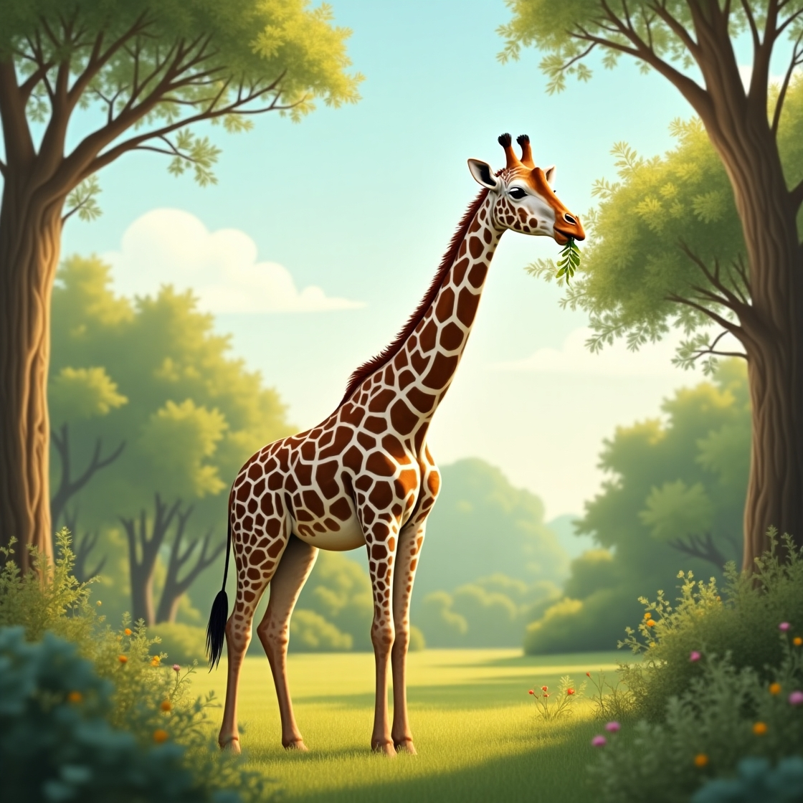
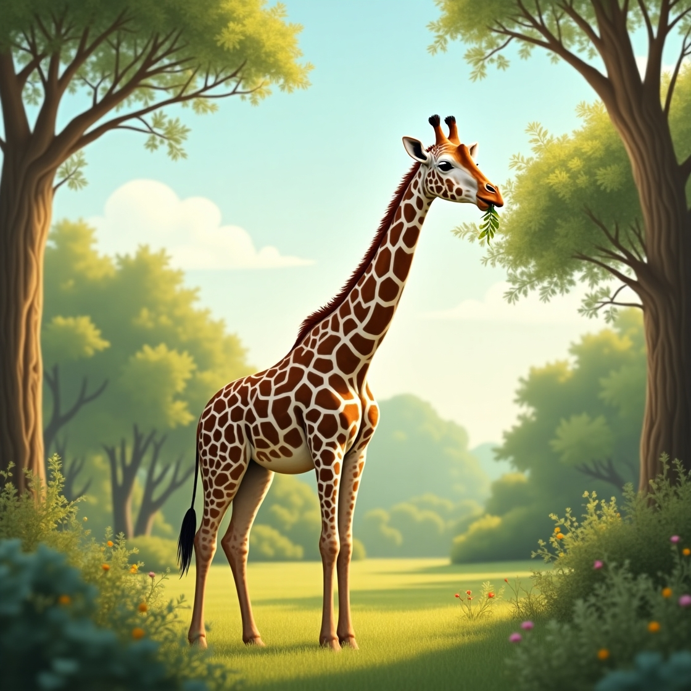

All About Giraffes: The Gentle Giants of Africa
Giraffes are the tallest land animals on Earth. With their long necks and spotted coats, they are easy to recognize and fun to learn about. Let’s explore some cool facts about these gentle giants!
Where Do Giraffes Live?
Giraffes live in parts of Africa, mostly in savannas, grasslands, and open woodlands. These places have lots of trees, which giraffes love because they eat leaves!
What Do Giraffes Eat?
Giraffes are herbivores, which means they eat only plants. Their favorite food is the leaves of the acacia tree. Their long necks help them reach the tallest branches, and their tongues—up to 18 inches (45 cm) long—help them grab leaves with ease. Their tongues are even purple to protect them from sunburn!
How Tall Are Giraffes?
Giraffes can grow up to 18 feet (5.5 meters) tall. Their legs alone are taller than many people—about 6 feet (1.8 meters)! Male giraffes are usually taller than females.
Why Do Giraffes Have Spots?
Each giraffe has a unique pattern of spots—just like a fingerprint! The spots help them blend in with trees and shadows, which can help protect them from predators like lions.
Fun Facts!
- A giraffe’s heart is two feet long!
- They can run up to 35 miles per hour (56 km/h) for short distances.
- They only need to drink water every few days—most of their water comes from plants.


 
